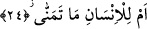

dışındaki şeylere yönelerek bu kabiliyetlerini yok ettiklerine işâret edilmektedir. Çünkü
onlar her ne kadar Rab’lerinden hidâyetin vesileleri ve gerekleri olan; Nebî (a.s.),
Kur’ân-ı Kerîm, zâhirî mûcizeler ve peygamberlerin nübüvvetinin doğruluğu ve
sıhhatine delâlet eden mûcizeler gelmiş olsa da onlar nefse tâbi olma ve hevâya
uymakla meşgul olup velîye ve Mevlâ (c.c.)’ya teveccühden yüz çevirmişlerdir. Onlara
göre bunun nedeni hidâyetin yevm-i ezelde gelmemiş olup yaratıldıktan sonra dünyada
gelmiş olmasıdır. Bunun için geç gelen hidâyete tâbi olmazlar.
Yine onlara göre Allah’ın kendisine yevm-i ezelde nur vermediği hiç bir kul yevm-i
ebede kadar ona nâil olamaz. Şunu bil ki hidâyet hevânın zıddıdır. Şüphesiz ki
insanların hidâyete tâbi olması için kendisinde bulunan hevâya yaklaşmaması îcâb
etmektedir.
Bazı büyükler şöyle demişlerdir; “Hiç bir velîye kerâmeti, peygamberler (a.s.)’ın
mirasçısı olma hükmünün dışında verilmez. Bu nedenle Îsâ (a.s.)’ın vârisi olan velî, Îsâ
(a.s.)’ın vârisi hükmünde olmadıkça havada ve suda yürüyemez. Muhammed (a.s.)’in
vârisi hükmünde olmayan velî de onun umumî makamından dolayı kendi kudretiyle bu
tür kerâmetleri gösteremez.
Bir hadis-i şerifte: “Şâyet Îsâ (a.s.) yakını fazla olsaydı, muhakak (sıdk vasfı
gereğince değil de) yakını kuvveti mücebince mutlaka havada uçardı” buyrulmuştur.
[95]
Biz Îsâ (a.s.)’ın birbirlerine yakın olarak havada yürüyen evliyâullahdan daha
kuvvetli bir yakîne sâhip olduğunda şüphe etmiyoruz. Zira o ülü’l-azm
peygamberlerdendir. Bu nedenle kesinlikle biliyoruz ki bizdeki bir velînin havada
yürümesi, Îsâ (a.s.)’ın yakîninden fazla bir yakîne sâhip oluşundan değil, tebeiyyet
sıdkının hükmü gereğidir. Çünkü Îsâ (a.s.) yakîne tâbi oluş bakımından Muhammed
(a.s.)’a fazilette en yakın kişi olup tüm veliyyullahdan daha yüksek sıdk makamındadır.
Öyleyse şöyle diyebiliriz: Her ne kadar Îsâ (a.s.) havada yürüme işini terketmiş olsa da
onun buna kudreti var idi. Özetle denebilir ki “hevâyı terketmeyen havada yürüyemez.”
Keskin aklın pençesini gördükten sonra
Hevâ ve hevesin inadcılığı kalmadı.
24. Yoksa insan, her arzu ettiği şeye sâhip mi olacaktır?
Âyetteki “em/yoksa” edatı munkatı’ bir cümlenin ifâdesi için olup, “belki, bilakis”
mânâsına gelen “bel” harfi ise müşriklerin üzerinde oldukları delillerinin dayanaksız
olduğu, zan ve hevâ-yı nefse uymalarının neticesi olarak neş’et ettiği ve kesinlikle bu
dellilerin işe yaramayacağını beyân makamında olan bir intikal harfidir. Hemze ise,
inkâr ve nefy içindir. Temennî, bir şeyin nefisde istenmesi (takdiri) ve orada bunun